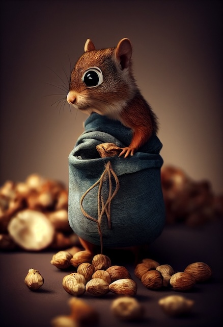

Un șoricel adorabil, cu blană cenușie și urechi mari rozalii, îmbrăcat într-un costum de aviator retro.
Un iepuraș adorabil îmbrăcat într-un kimono tradițional japonez.
O singură casă de zâne fermecătoare, amplasată într-un colț idilic al unei păduri.
O vulpe elegantă, cu blană de un portocaliu vibrant, accente albe pe piept și bot, și coadă stufoasă cu vârful alb, stă într-un peisaj natural.

O veveriță jucăușă cu blană roșcată, urechi ascuțite și ochi mari, strălucitori, este cocoțată într-o pungă de hârtie maro plină cu alune.